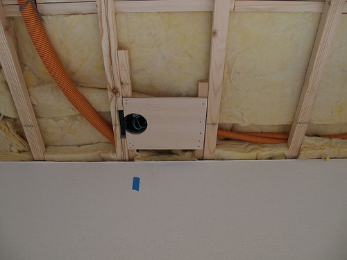
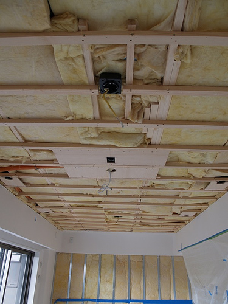
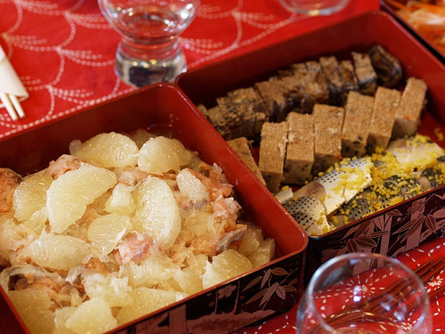
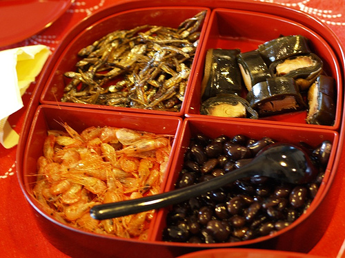
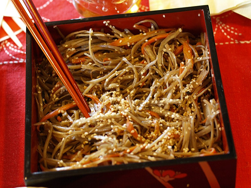

ソニーのブルーレイディスクレコーダーの販促キャンペーンで、スパイダーマン３のBlu-Rayソフトを貰いました。
・ソニー ブルーレイディスク ポータルサイト || 選べるBD ソフト 体感キャンペーン
(もうキャンペーンは終了しています)
１，２と映画館で観て、３は見損ねていたので良かったです。
BDソフトももうすこし品揃えが増えて値頃になってくれるとうれしいんですが・・。
・Amazon - スパイダーマン３
| スパイダーマンTM3 (Blu-ray Disc) トビー・マグワイア キルステン・ダンスト サム・ライミ ソニー・ピクチャーズエンタテインメント 2007-12-19 売り上げランキング : 3213 おすすめ平均  Amazonで詳しく見る by G-Tools |
・楽天 - スパイダーマン３
・楽天 - BDZ X90
・Amazon - BDZ X90
| SONY 地上・BS・110度CSデジタルハイビジョンチューナー搭載ブルーレイディスクレコーダー HDD500GB BDZ-X90 ソニー 2007-11-08 売り上げランキング : 3836 おすすめ平均  Amazonで詳しく見る by G-Tools |
・ホームシアター建設記 - これまでのウチの映画視聴環境
・ホームシアター建設記 - スピーカー、プロジェクター配線と遮音
・ホームシアター建設記 - スピーカー組み上げ、視聴
・ホームシアター建設記 - スピーカーの天吊り
・ホームシアター建設記 - スピーカー材料集め
・ホームシアター建設記 - ブルーレイディスクレコーダー BDZ-X90 購入
・ホームシアター建設記 - BRAVIA購入！
・ホームシアター建設記 - TVボード製作
・ホームシアター建設記 - TVボード会計

年末の話になりますが、買いました！Blu-Ray ディスクレコーダー。
Blu-Rayディスクレコーダーといえば、出た当初はハードディスクもついていないタイプが30万円もする高嶺の花でしたが、最近は10万円を切る機種もでてくるくらいお値頃感がでてきました。
HD DVD との規格競争も終わりを見せてきた頃でこれから普及が進んでいくのではないのでしょうか。
巷では最近、これからは Blu-Ray 対ネット配信の競争になるんだ、なんて話になっています。
が、 Blu-Ray と同等のビットレート、画質を満足にストリーミング配信、または保管できる状況にはしばらくならないと思います。
・「勝者はBlu-rayでもHD DVDでもなく、ハードディスク」--シーゲイトCEOが発言:ニュース - CNET Japan
・HD DVD陣営よ、引き際を知れ--消費者のために規格戦争の早期終結を:コラム - CNET Japan
・NIKKEI NET（日経ネット）：米国 ニュース －アメリカ関連のニュースを速報
・次世代光ディスク戦争の陰で、映像コンテンツの配信に乗り遅れる日本:コラム - CNET Japan
で、買ったのは SONY の BDZ-X90。
・ソニー ブルーレイディスク ポータルサイト || 商品情報 || BDZ-X90
決してお値頃感はない、最新かつ最上位機種です。
艶やかで高級感のあるボディ。
比較的豊富な入出力端子。
いままでテレビはハイビジョンなのに、録画は PSX で普通ビジョン画質という「もったいない」状況でした。
朝の連続テレビ小説などを見るにはまぁ十分ですが、DVDの比較的キレイな画質に慣れると地上アナログ波の眠たい画質はがまんなりません。
やっぱり地上デジタルのハイビジョン画質をそのまま録画できるのは良いです！
ちりとてちんも超高画質！
映画も5.1chサラウンドで高音質、大迫力、大満足です！
・楽天 - BDZ X90
・Amazon - BDZ X90
| SONY 地上・BS・110度CSデジタルハイビジョンチューナー搭載ブルーレイディスクレコーダー HDD500GB BDZ-X90 ソニー 2007-11-08 売り上げランキング : 3836 おすすめ平均 Amazonで詳しく見る by G-Tools |
・ホームシアター建設記 - これまでのウチの映画視聴環境
・ホームシアター建設記 - スピーカー、プロジェクター配線と遮音
・ホームシアター建設記 - スピーカー組み上げ、視聴
・ホームシアター建設記 - スピーカーの天吊り
・ホームシアター建設記 - スピーカー材料集め
・スパイダーマン3 ゲット！ - ソニー選べるBDソフト体感キャンペーン
・ホームシアター建設記 - BRAVIA購入！
・ホームシアター建設記 - TVボード製作
・ホームシアター建設記 - TVボード会計
ちょっとパケットキャプチャをしたくなり、Fink で Wireshark をインストールしました。
起動はできるんですが、キャプチャを始めようとするとクラッシュ!
調べてみたら X11 のバグらしく、最新版をXQuartz - Tracからダウンロード、インストールすれば良いとのこと。
・Re: [Fink-devel] X11 BadMatch errors in wireshark and pan
・Re: X Error: BadMatch in kile under Mac OS 10.5.1
ちなみにこんなメッセージが記録されていました。
'BadMatch (invalid parameter attributes)'ってのが出てたらとりあえず X11 をアップデートすれば ok。
Password:
The program 'wireshark' received an X Window System error.
This probably reflects a bug in the program.
The error was 'BadMatch (invalid parameter attributes)'.
(Details: serial 8503 error_code 8 request_code 67 minor_code 0)
(Note to programmers: normally, X errors are reported asynchronously;
that is, you will receive the error a while after causing it.
To debug your program, run it with the --sync command line
option to change this behavior. You can then get a meaningful
backtrace from your debugger if you break on the gdk_x_error() function.)
うまく起動したところ。
今年も不具合があったとか報道されています。
具体的な数字を確認してみると、
2006年は 444件(内機器の不具合と考えられるのは432件) / 492,726人
2007年は 356件(内機器の不具合と考えられるのは275件) / 497,654人
今年は 175件 / 490,415人
といった形になります。
不具合の発生率でいうと
2006年 : 0.090%
2007年：0.072%
2008年：0.036%
という計算になります。
「センター試験 リスニングテストトラブル大幅減少！！」という報道の仕方もできるわけですね。
さらに今年の175件についてはまだ調査結果がでていないので、機器に不具合が見られない、受験生の操作ミスと考えられるケースがまだ見つかる可能性がありますので不具合の発生率はより減少する可能性があります。
もちろん、この数字を「電子機器の初期不良発生率」ととらえるか、「人生がかかっているセンター試験をちゃんと受けられる確立」ととらえるかによって数字の意味も変わってきます。
ただし、後者に関しては元々織り込み済みで、再試験を受けることが出来る仕組みが用意されているわけですからある程度甘く見ても良いのではないかと思います。
「電子機器の初期不良発生率」としては、私の感覚ではとても少ないように思えます。
試験会場備え付けのスピーカー機器や、教壇にラジカセを置いて音を鳴らすような方式をとったら接触不良だとか停電、「聞こえない」「うるさい」、だとかでより大きい割合で問題が発生しそうです。
まぁ、今時分、批判するのがマスコミの仕事なのかもしれませんがこの件に関しては大学入試センターも SONY も良い仕事をしているんじゃないかなーと思っています。
来年の受験生の不安を煽ってもいいことはないと思います。
関連記事：
・2007年5月 - oogakinetの情報処理技術備忘録
しました。
Twitter4J は、その名の通りJava からTwitterAPIを操作するためのライブラリです。
REST とか XML とか気にせず、タイプセーフに手軽に Twitter API をいじることができます。
・Twitter4J
今回のリリースではお気に入り関連、アカウント関連、通知関連のメソッドのサポートを追加しました。
修正内容の詳細はこちら。
ちなみに私のアカウントは http://twitter.com/yusukeyです。
お気軽に follow してください。
関連エントリ：
・Google Calendar と Twitter を連携 - Twittercal
・ Suitter Public beta 1.0
・メールで Twitter! - TwitterMail.com
・Twitter4J 1.0.2 リリース
・Twitter4J 1.0.1 リリース
・Twitter4J 1.0 リリース
リリース1.0.3 で追加されたメソッドは以下の通りです。
public final synchronized List<Status> favorites(int page) throws TwitterException
public final synchronized List<Status> favorites(String id) throws TwitterException
public final synchronized List<Status> favorites(String id,int page) throws TwitterException
public final synchronized Status createFavorite(int id) throws TwitterException
public final synchronized Status destroyFavorite(int id) throws TwitterException
public final synchronized boolean verifyCredentials()
public final synchronized List<Status> archive() throws TwitterException
public final synchronized List<Status> archive(int page) throws TwitterException
public final synchronized List<User> getFriends(int page) throws TwitterException
public final synchronized List<User> getFriends(String id,int page) throws TwitterException
public final synchronized User follow(String id) throws TwitterException
public final synchronized User leave(String id) throws TwitterException
follow / leave が API から出来るようになりました。
Twitter4J では未対応です。
やる気があれば今夜にでも。
・ API Documentation - Twitter Development Talk | Google Groups
follow
Enables notifications for updates from the specified user to the authenticating user. Returns the specified user when successful.
URL: http://twitter.com/notifications/follow/id.format
Formats: xml, json
Parameters:
id. Required. The ID or screen name of the user to follow. Ex: http://twitter.com/notifications/follow/12345.xml or http://twitter.com/notifications/follow/bob.json
leave
Disables notifications for updates from the specified user to the authenticating user. Returns the specified user when successful.
URL: http://twitter.com/notifications/leave/id.format
Formats: xml, json
Parameters:
id. Required. The ID or screen name of the user to leave. Ex: http://twitter.com/notifications/leave/12345.xml or http://twitter.com/notifications/leave/bob.json
日本語版の登場も近い Twitter ですが、今になってようやく公式blogが出来ました。
・Twitter Technology Blog
最近またBEA株の値動きが激しいので何かあったらしいですが特に追っていませんでした。
が、ついに合意に至ったようです。
このニュースが世の中に与えるインパクトはまだ定かではありませんが、古巣が買収されるのは気分の良いものではありません。
せめて買収側の企業だけではなく、買収される側の企業の従業員、並びに既存顧客全てが喜べる方向にコトを進めて貰いたいと願うばかりです。
・BEA - Press Releases - Oracle to Acquire BEA Systems
・Bloomberg.com: Oracle Wins Over BEA, Agrees to $8.5 Billion Purchase (Update3)
・速報 - Oracle、85億ドルでBEA Systemsを買収へ | 経営 | マイコミジャーナル
・ Oracle、BEAを買収 - S/N Ratio (by SATO Naoki)
・Oracle、BEAを買収：紆余曲折の末今年半ばに:ニュース - CNET Japan
・ついに Oracle が BEA Systems を買収！？ - めざせ！金持ち父さん - 楽天ブログ（Blog）
・ ついにBEAが買収されることになったようです - バキュラのように・・・
世界最速のアプリケーションサーバー、WebLogic と JRockit、そしてグローバルに展開する人材を一度に手に入れたことになります。
是非有効に活用してもらいたいものです。
あ、万が一にも WebLogic を捨てて OAS を残すような判断をする時はオープンソース化してくださいね。
ほんとに。
同時に Sun が MySQL を買収するとのニュースも。
日本法人はこれから立ち上げようと奮闘しているところだったので強力な営業力を手に入れてガンガン売れていくのではないでしょうか。
競合ベンダは嬉しくないニュースですね。
・MySQL AB :: Sun to Acquire MySQL
・サン・マイクロシステムズ、オープンソースDB企業のMySQLを取得へ:ニュース - CNET Japan
関連記事:
・BEA Systems, Ichan に機密情報を提供
・BEA Systems, Ichan の書簡に回答
・Oracle のBEA Systems 買収オファー、期限切れる
・BEA Systems for Sale
・Oracle、BEA Systems 買収に未練
・Oracle による BEA Systems 買収回避
・Oracle が BEA Systemsを買収？？？
IBM が iPhone 等にソフトウェアを提供する見込みだそうです。
恐らく Lotus Notes にアクセスできるクライアントなどではないでしょうか。
・IBM to Add Software for Apple Devices: Financial News - Yahoo!
Finance
MS も Exchange に対応したソフトを提供するようになりますかね？
おまかせで録画されていたので何となく観てみました。
エミネムが成り上がっていく様を見られるのかと思えば、地元でちょっと有名になったところで唐突に終了。
場面の移り変わりも余りなく、見所がよく分かりませんでした。
エミネムがイライジャ・ウッドに似てる、ということがわかったのが収穫でしょうか。
・Amazon - 8 mile
| エミネム キム・ベイシンガー ブリタニー・マーフィ おすすめ平均  愚見の目に晒されても上出来のドラマ仕立て面白かった 愚見の目に晒されても上出来のドラマ仕立て面白かったAmazonで詳しく見る by G-Tools |
・楽天 - 8 mile
だそうで。
Oracle - BEA の時以上に自分に関係するので興味津々です。
独立で OS ニュートラルな検索エンジンベンダとして走ってきたファストだけに、OS を抱えている会社に買収されるのは顧客満足度を下げないか心配です。
・ネタフル - Microsoft、12億ドルでFASTを買収か
・スラッシュドット - MicrosoftがFast Searchに買収を提案
・Slashdot - Microsoft Buys Search Engine, Going After Google?
・ファストサーチ & トランスファ
・マイクロソフトは、いいところに目を付けた──企業内検索をめぐる新たな主導権争い
・マイクロソフトの買収戦略幹部が退任へ
・Microsoft Announces Offer to Acquire Fast Search & Transfer
・@IT - マイクロソフトが検索大手のファストを買収
・ロイター - 米マイクロソフト、ノルウェーのファストサーチに買収提案
・CNET Japan - マイクロソフト、ファストに12億ドルで買収提案
・MarketZine - 米MicrosoftがノルウェーのFAST Searchに買収提案、企業向け検索市場でGoogleを一歩リード？
・Microsoft's Fast deal boosts Autonomy
・FAST買収でMicrosoftのGoogleとの戦いに新展開
・MicrosoftのFast Search&Transfer買収 - ゆーたんのつぶやき
・JALがWebサイト検索を強化、ファスト サーチの技術を採用
・AdMomentum - ファストの新しい広告プラットフォーム
・検索を軸にファイナンス2.0を制するSBIホールディングス
・侍ズム - マイクロソフトが Yahoo! に買収提案
・侍ズム - マイクロソフト、ファスト株 92.6%の株主の承認を得る
MSとFAST共同で行われた電話会見の様子は (800) 945-5760 で聞くことができます。
Skype なら日本からでも無料で聞けます。
スピーカーが組み上がったらあとは配置＆セッティングするだけ。
FE-83Eは高音が得意で指向性が強いらしいのでリスニングポジションにしっかり向ける必要があります。
スピーカーを吊すこと自体は簡単ですが、スピーカー方向を決めるのはちょっと大変です。
角度を調整して、リスニングポジションに行ってこっちを向いているか確認して、またスピーカーを調整して・・の繰り返しです。
レーザーポインターを箱に貼り付けて調整すれば一発！と思ったけどウチにあるレーザーポインターはボタンが引っ込んでいて常時onにするのが難しかったのでやりませんでした。
ねじ込む位置をマークして
電動ドライバでマウントを一気に取り付け！
あとはスピーカーを取り付け、リスニングポジションに向ける
・ホームシアター建設記 - これまでのウチの映画視聴環境
・ホームシアター建設記 - スピーカー、プロジェクター配線と遮音
・ホームシアター建設記 - スピーカー材料集め
・ホームシアター建設記 - スピーカー組み上げ、視聴
・ホームシアター建設記 - ブルーレイディスクレコーダー BDZ-X90 購入
・スパイダーマン3 ゲット！ - ソニー選べるBDソフト体感キャンペーン
・ホームシアター建設記 - BRAVIA購入！
・ホームシアター建設記 - TVボード製作
・ホームシアター建設記 - TVボード会計
今回のスピーカー作成ではエンクロージャー作りは省けるので楽ちんです。
ユニットを箱に取り付けるだけ。
面倒なのはむしろ白い壁紙に合うよう、箱を塗るところでした
スプレーで色を塗ったことはないのでややムラムラになってしまいましたが気にしない気にしない。
あと、工夫したのはターミナル(スピーカーケーブルを繋げるところ)からスピーカへ繋がる線がいやに細くて頼りなかったので手持ちのスピーカーケーブルととりかえておいたことくらいです。
いざアンプにつないで聞いてみると、お、なかなかしっかりした音が出るじゃないの！
これまでメインで使っていたスピーカーと比べると・・・うん？全然負けてる・・orz。
手持ちのスピーカーはソニーの SS-X300 という父から譲り受けたもので、低音がしっかり出ています。
まぁ、箱が大きいので低音がよりしっかりでるのはなんとなく感覚的に納得できますが、低音だけでなく全域にわたって情報量が多い感じがします。
25年前のスピーカーにくらべれば最新のユニットはそれなりにいい音がでるんじゃないかと期待していましたが甘かったです。
やはりユニットのサイズが大きく、低音、高音使い分けて鳴らす仕組みがあるので良いのでしょうね。
しかしエージングといって、スピーカーの振動板などがこなれてくると音はもっと良くなってくるらしいので楽しみです。
また、今までメインの左右とサラウンドの左右は違うスピーカーのペアでしたが、今回は同じユニット、エンクロージャーで４つ作りました。
サラウンドで聴く場合には前後左右の音のつながり感が良くなる・・・・かもしれません。
本当はセリフを鳴らすセンタースピーカーも合わせたいのですが、今回使っているFE-83Eは防磁タイプではないのでブラウン管テレビに近づけられません。
プロジェクター、または薄型テレビを手に入れた時に作り足そうと思います。
今回作ったスピーカーと SONY の SS-X300 を聞き比べているところ。
本当はスピーカーの高さを合わせないとイケナイでしょうね。
・ホームシアター建設記 - これまでのウチの映画視聴環境
・ホームシアター建設記 - スピーカー、プロジェクター配線と遮音
・ホームシアター建設記 - スピーカー材料集め
・ホームシアター建設記 - スピーカーの天吊り
・ホームシアター建設記 - ブルーレイディスクレコーダー BDZ-X90 購入
・スパイダーマン3 ゲット！ - ソニー選べるBDソフト体感キャンペーン
・ホームシアター建設記 - BRAVIA購入！
・ホームシアター建設記 - TVボード製作
・ホームシアター建設記 - TVボード会計
5.1chの音を鳴らすスピーカーは揃っていますが、白い壁紙に手持ちの黒いスピーカーをぶら下げるのは見た目が良くないということでスピーカーを新しくすることにしました。
しかし、オーディオそのものにこだわりはなく、どういうスピーカーを選んで良いかわからないので今回は自作してみることにしました。
自作の方が安く上がるし色々チューニングできるらしいしね。
スピーカーの自作といっても難しいことはなく、音を鳴らすユニットを買ってきて箱にはめるだけです。
材料を買ってきたのはスピーカー自作用の部品を売っているお店としては老舗らしい秋葉原のコイズミ無線。
買ってきたモノ
自作用のスピーカーユニットとしては定番らしい、FOSTEX FE83E。
8cmのフルレンジドライバー(一つのコーンで低音から高音までカバーしてくれる)ユニットです。
天吊り用の金具。ひとまずサラウンドLR用にペアで買ってきました。
箱。SV-101
スピーカーの自作はユニットだけを買ってきて箱(=エンクロージャー)を設計、組み立てるのが醍醐味らしいですが、今回はズルをして出来合いの箱も一緒に買ってきました。
さて、どんな音がするか楽しみです。
・ホームシアター建設記 - これまでのウチの映画視聴環境
・ホームシアター建設記 - スピーカー、プロジェクター配線と遮音
・ホームシアター建設記 - スピーカー組み上げ、視聴
・ホームシアター建設記 - スピーカーの天吊り
・ホームシアター建設記 - ブルーレイディスクレコーダー BDZ-X90 購入
・スパイダーマン3 ゲット！ - ソニー選べるBDソフト体感キャンペーン
・ホームシアター建設記 - BRAVIA購入！
・ホームシアター建設記 - TVボード製作
・ホームシアター建設記 - TVボード会計
・楽天-FOSTEX FE-83E
プラスターボードには全然強度がないので、テキトウにスピーカーやプロジェクターをぶら下げては簡単に落ちてしまいます。
そこで、スピーカーやプロジェクターを吊すため各箇所に下地のベニヤを張りこみ、また配線用の CD 管を配管してもらいました。
CD 管は、工事後の配線や、線の入れ替えを容易にするためのプラスチック製の管のことです。
また、耳がつぶれるような大音量で映画を観るつもりはありませんが、少しでもお隣にご迷惑を掛けないようにと遮音のためグラスウールも天井と壁に埋め込みました。

CD管とグラスウール、下地のベニヤ板。

中央にあるのがプロジェクター用の下地。
左右奥に２つずつあるのがスピーカー用の下地。
オーディオに詳しい同僚の助言で、将来7.1chにアップグレードできるようサラウンドスピーカ用には４つ配線がなされています。
・ホームシアター建設記 - これまでのウチの映画視聴環境
・ホームシアター建設記 - スピーカー材料集め
・ホームシアター建設記 - スピーカー組み上げ、視聴
・ホームシアター建設記 - スピーカーの天吊り
・ホームシアター建設記 - ブルーレイディスクレコーダー BDZ-X90 購入
・スパイダーマン3 ゲット！ - ソニー選べるBDソフト体感キャンペーン
・ホームシアター建設記 - BRAVIA購入！
・ホームシアター建設記 - TVボード製作
・ホームシアター建設記 - TVボード会計
映画好きなのでホームシアターが夢です。
もちろんホームシアターといってもレベルは様々で、テレビと DVD プレーヤーさえあれば最低限ホームシアターは成り立ちます。
が、せっかくなら迫力の大画面、5.1 / 7.1ch といったマルチチャンネルのサラウンド再生、Blu-ray や地上デジタルによるハイビジョンで臨場感たっぷりに観たいというのがオトコの夢。
いきなりは無理なので、今まで少しずつそろえてきたのは・・・
6年前くらい：ONKYO の AV アンプ、YAMAHAの5.1ch スピーカーセットを購入
→Dolby Pro Logic の 4ch、Dolby Digital の 5.1ch が再生可能に
4年前：36インチのトリニトロンを購入
→ハイビジョンで地上波を、DVDをワイドで再生可能に。36インチは恐らく民生用ブラウン管では最大級
2年前: PS3を購入
→Blu-rayが再生可能に。ただしBlu-ray ソフトは買ってない
1年前: YAMAHAのAVアンプをもらう
→地上デジタルの AAC のデコードが可能に。
といったところです。
機器はまぁまぁですが、バッチリセッティングされているかというとそうではなく、賃貸なのでスピーカーはカウンター上になんとなく配置し、8畳ほどの部屋としては十分な大画面でそこそこ楽しんでいた感じです。
今回引っ越しをするにあたり、せっかくの分譲マンションなのでサラウンドスピーカーやプロジェクターはバシッと天井から吊るし、大画面で映画を見られるようにしたいと思います！
・ホームシアター建設記 - スピーカー、プロジェクター配線と遮音
・ホームシアター建設記 - スピーカー材料集め
・ホームシアター建設記 - スピーカー組み上げ、視聴
・ホームシアター建設記 - スピーカーの天吊り
・ホームシアター建設記 - ブルーレイディスクレコーダー BDZ-X90 購入
・スパイダーマン3 ゲット！ - ソニー選べるBDソフト体感キャンペーン
・ホームシアター建設記 - BRAVIA購入！
・ホームシアター建設記 - TVボード製作
・ホームシアター建設記 - TVボード会計
元日、おいしいおせちを食べて今年分のエネルギーを充電しました。
母、妻は偉大です。
今年もよろしくお願いいたします。


